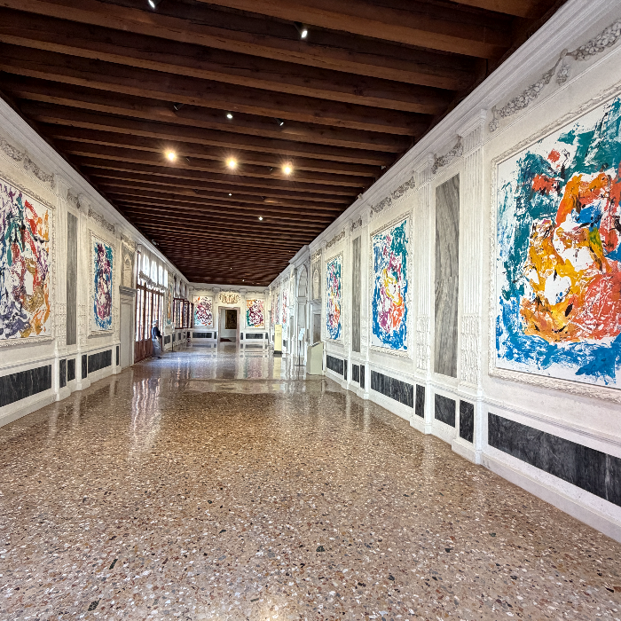
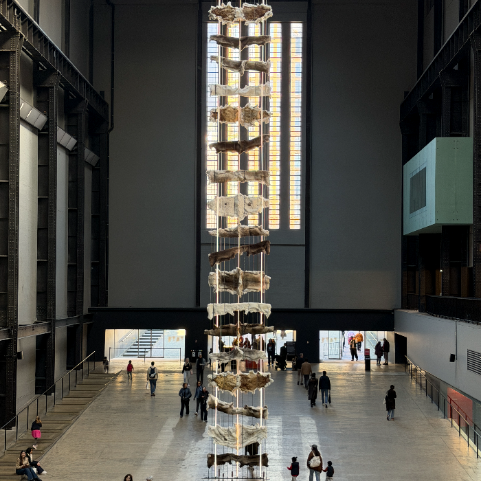
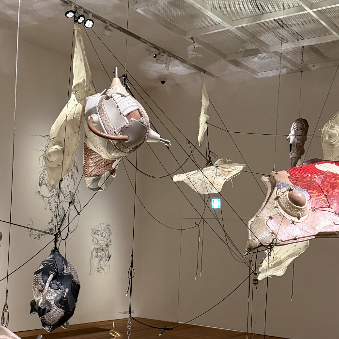

About
D'ART is a Seoul-based art advisory founded on a simple conviction: that the collections worth building are shaped by patience and judgment, not by timing or trend.
We track the movements of the contemporary art market with a precision most advisories cannot offer, identifying shifts before they become consensus, and translating that intelligence directly into acquisition strategy. Our clients collect ahead of the curve, not behind it.
We do not transact. We advise, quietly, consistently, and over time. Our work is built on discretion: clients trust us with decisions that are deeply personal, and we honour that trust completely. The relationships we value most are the ones that have lasted years, not seasons. We are not looking for buyers. We are looking for partners.
Founder
Timmy Kim
D'ART is led by Timmy Kim, a curator and advisor whose standing bridges the Korean art establishment and the international market few Korean specialists reach with equal authority. That standing is built through curatorial work that spans a Dansaekhwa exhibition in Paris, a historical exhibition tracing the full arc of Korean modern and contemporary art, an exhibition of Chang Ucchin, and an exhibition of Nam June Paik, the artist who first placed Korean art at the center of the global contemporary conversation. A collaboration with Burberry extends that same authority into the commercial world.
Alongside this curatorial record, Timmy advises private collectors and institutions directly on acquisition, applying the same judgment behind these exhibitions to decisions made quietly, for clients who rarely appear in public record. His advisory practice centers on building collections around long-term conviction rather than short-term timing, translating curatorial authority into acquisition strategy for those who collect with intention.


Contact
We work with a selected circle of collectors and institutions. If you are building a collection with intention, or considering placing a work, we would be glad to hear from you.
Send InquiryIn addition to our main space, we operate a private office and salon for select clients, available by invitation only.